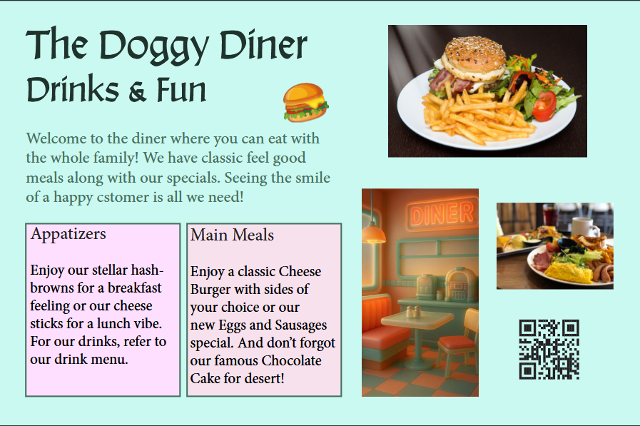
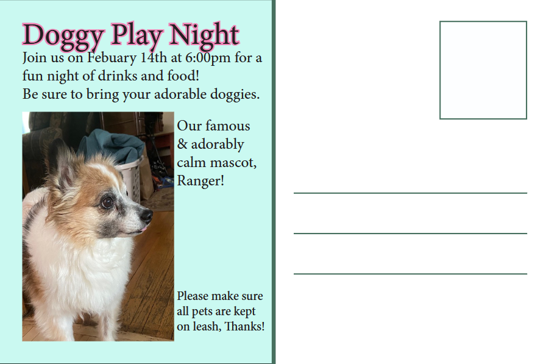
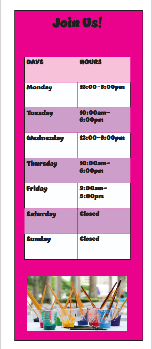
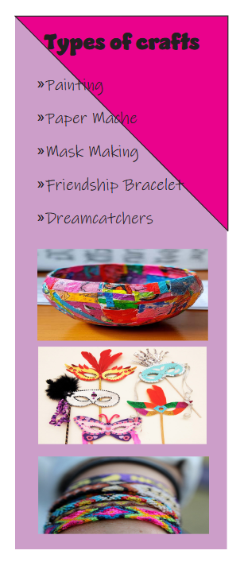
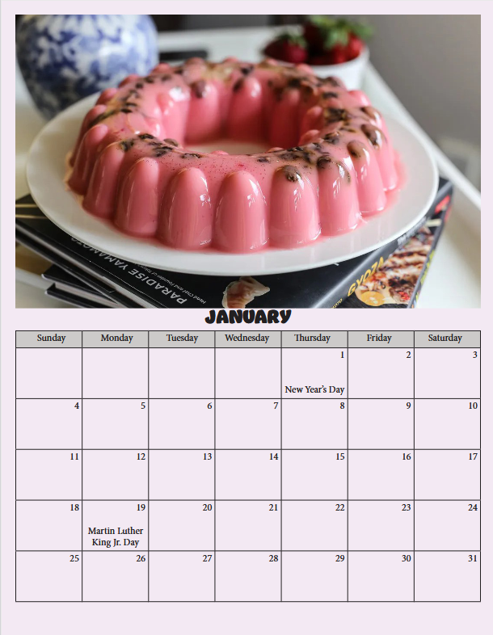
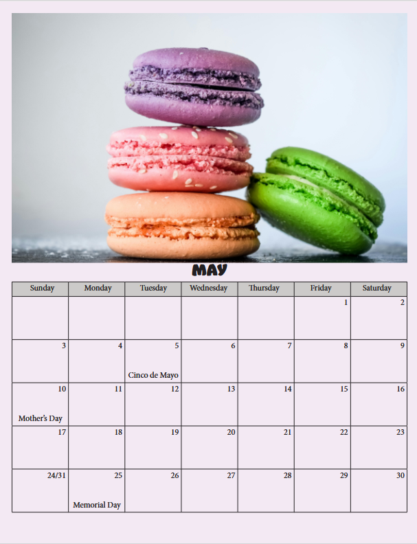
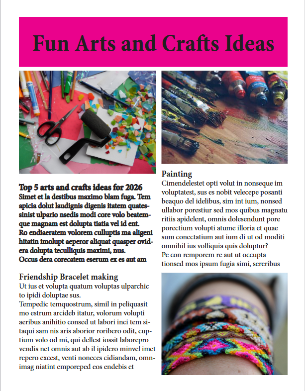
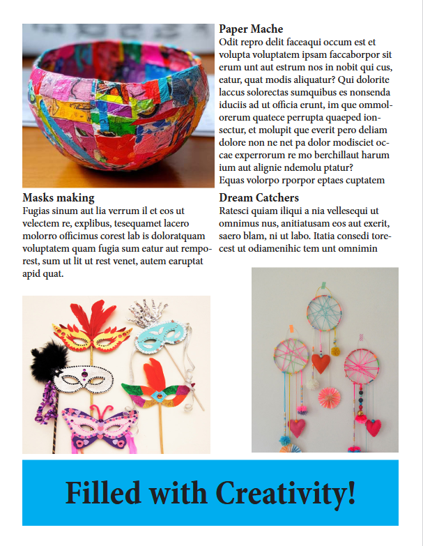
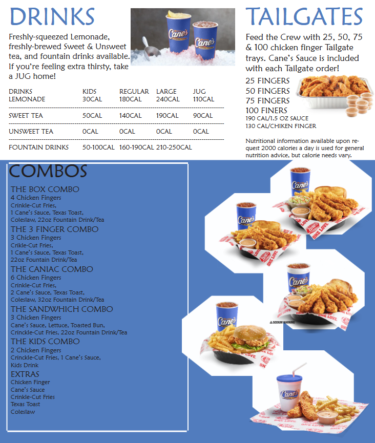

InDesign Projects
InDesign Class
During this class I learned the many ways to create all different types of things in InDesign. On this page of my portfolio I will be showcasing what I have made over the course of this class. Some of these projects will be cut short as there are many screenshots for each, I have shortened them to best showcase what I have learned from this class.
Postcard Project
These screenshots show a postcard I made as one of my first projects in this class. It also includes my dog, Ranger, in it.


Brochure Project
These screenshots show a brochure that I made, the theme was arts and crafts. I took 2 of the 6 pictures to shorten it and show what I learned with making tables.


Calendar Project
These screenshots show 2 of the 12 months of a calendar. The theme was desserts that matched with the beginning letter of the month.


Magazine Spread
These screenshots show a magazine spread that I made, the theme was arts and crafts, like the brochure. This was another one of my early projects so it doesn't have any original texts.


Menu Project
This screenshot is of my menu project, we had to take an already existing menu and turn it into something different while resembling the original. The original for this one was the famous Raising Cane's.
